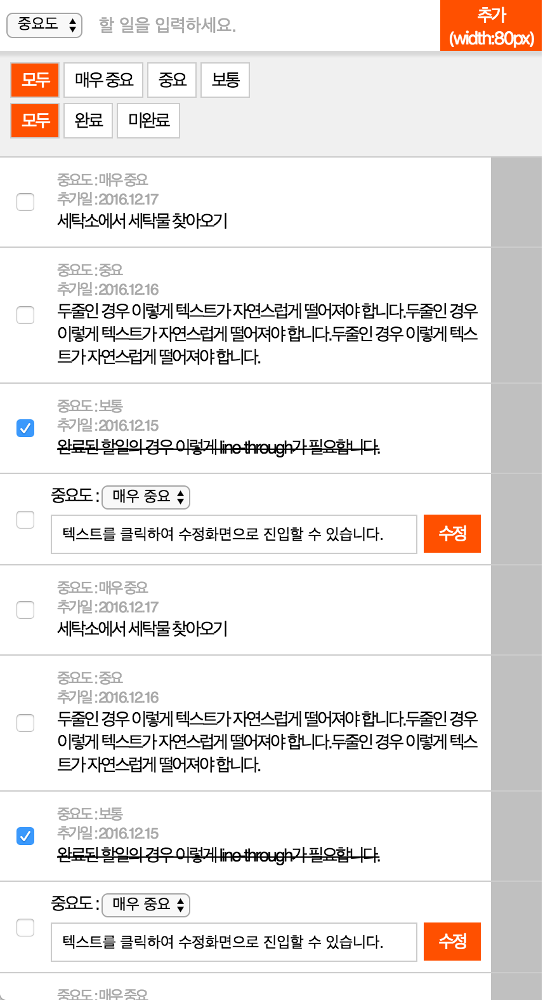
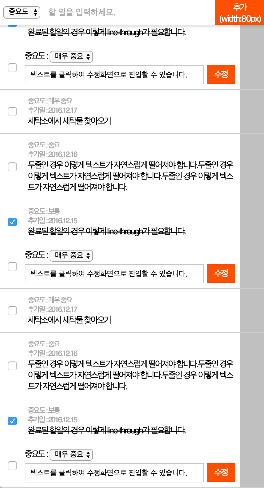

Programming platform, plugin의 제약은 없습니다. HTML 과 CSS, Javascript 를 사용한다면 어떤 platform, plugin 을 사용해도 됩니다. 사용자 입력 등의 UI 측면도 CLI, GUI 등 자유롭게 구성할 수 있습니다.
제출 안내
제출하는 소스는 하나의 압축파일로 되어 있어야 합니다. 제출 소스는 answer.html 파일을 브라우저 상에서 실행하여 결과를 확인하는 것이 가능해야 합니다.
css, img, js 파일은 각 폴더에 자리하면 됩니다. 만약 별도의 개발환경을 구축하였거나, 기타 이유로 필요시 자유롭게 변경하셔도 무방합니다.
평가 기준
각 문항은 아래와 같은 기준에서 평가됩니다.
얼마나 시멘틱하게 마크업되었느냐를 평가합니다.
지체장애인, 시각장애인, 저시력자 등의 취약계층에 대한 접근성이 확보되었는지 평가합니다.
작성한 코드의 가독성을 평가합니다.
장기적으로 유지보수가 가능한 코드인지를 평가합니다.
다양한 브라우저, 디바이스에 대한 호환성이 확보되었는지 평가합니다.
아래 기준은 평가하지 않습니다.
모든 스펙을 구현했는지가 곧 당락을 결정짓지 않습니다. (일부만 구현하더라도 부분 평가합니다.)
본인이 일부 스펙을 구현하는 데 어려움이 있어 제외하더라도 부분 평가합니다. (예 : 스크립트 개발을 할 수 없기 때문에 마크업만 진행한 케이스)
PSD 등의 그래픽 원본을 제공하지 않기 때문에, 1~2px 단위의 디자인 스펙 검수는 진행하지 않습니다. (단, 아래 개발항목에 대한 내용은 필수로 구현되어야 합니다.)
만약 작성한 코드에 대해 부연설명이 필요하다면, (ex. 왜 이렇게 개발하였는지, 이 부분은 어떻게 서버개발이 진행되었으면 좋겠는지 등) 별도의 txt 파일이나 html 내에 주석을 사용하여 설명하셔도 됩니다. 부연설명과 그에 따른 코드사용이 합당하다면 추가 가산점이 있습니다.
기타
본 안내 및 문제 출제 내용에 설명되지 않은 내용은 "자유롭게" 결정하여 진행하실 수 있습니다.
개발항목
아래 이미지는 To Do List 를 관리하는 모바일웹 어플리케이션을 캡쳐한 화면입니다.
이미지를 참고하여, 같은 어플리케이션을 answer.html 에 개발하여 제출하시면 됩니다.
구현에 있어서는 아래 스펙을 만족하여야 합니다.
기본규칙
그림 1의 리스트는 To do list 입니다. 좌측의 체크박스는 완료버튼이며, 완료시 To do 가 완료되었다는 의미로 텍스트에 line through 가 생겨야 합니다.
그림 1의 상단, '할일을 추가하세요' 는 input 영역이며, 텍스트 입력 후 추가시 하단 리스트에 항목이 추가됩니다.
그림 2과 같이, 스크롤을 내렸을때 상단 input 영역은 상단에 고정된 상태로 유지되어야 합니다.
마크업
To do list 화면을 마크업합니다. css3 를 사용하셔도 좋으며, 다양한 디바이스 크기를 만족하여야 합니다.
상단 중요도 선택 select box 는 화면의 사이즈와 상관없이 항상 width:60px 이어야 합니다.
상단 '추가' 버튼은 화면의 사이즈와 상관없이 항상 width:80px; height:40px 이어야 합니다.
상단 할일입력 input 필드의 width 는 중요도와 추가 버튼을 제외한 나머지 영역이어야 합니다. (예: 창 크기가 400px 인 경우 중요도가 60px 이고 추가버튼이 80px이므로 input 은 260px 이어야 합니다)
리스트 좌측 체크박스와, 우측 회색 영역 (드래그앤 드랍) 은 각각 width가 항상 40px 이어야 합니다.
Javascript
추가영역 하단의 '모두', '매우 중요', '중요', '보통' 영역은 중요도 필터링 버튼입니다. 매우 중요, 중요, 보통은 복수로 선택될 수 있으며 선택된 할일 목록만 화면에 노출되고, 나머지는 숨겨져야 합니다. 모두를 활성화할 경우 다른 항목은 비활성화되며, 모든 할 일이 노출됩니다.
추가영역 하단의 '모두', '완료', '미완료' 영역은 완료여부 필터링 버튼입니다. 완료, 미완료는 복수로 선택될 수 있으며 선택된 할일 목록만 화면에 노출되고, 나머지는 숨겨져야 합니다. 모두를 활성화할 경우 다른 항목은 비활성화되며, 모든 할 일이 노출됩니다.
시간이 허락한다면 아래 항목을 구현해 주세요.
이미 추가된 할일항목 (예 : 세탁소에서 빨래 찾아오기) 을 터치하면 input 으로 변경되면서, 내용을 수정할 수 있어야 합니다. (수정하는 경우 추가일은 오늘 날짜로 변경됩니다.)
할 일 추가 input 이 비어있는 상태에서 추가버튼을 누르면 입력되지 않아야 합니다.
드래그 앤 드랍 (회색 영역을 터치했을 때만 동작) 으로 할 일의 순서를 바꿀 수 있어야 합니다.

그림 1. 어플리케이션 전경

그림 2. 어플리케이션 스크롤되었을 때그림 3. 매우중요,중요,완료가 체크된 경우